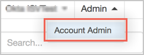
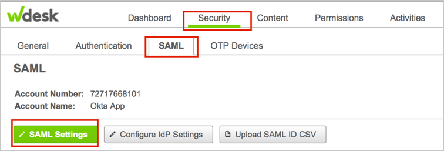
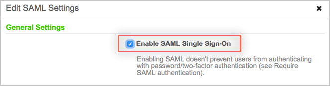
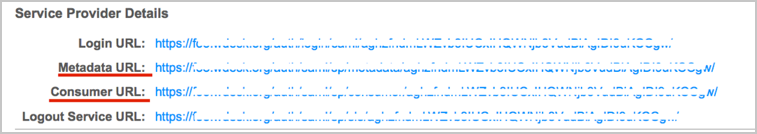
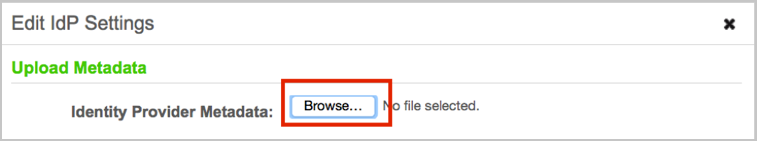
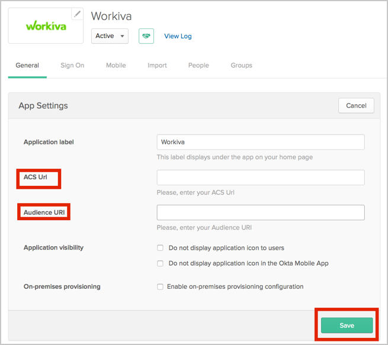

Login to Wdesk as a Security Administrator.
Select Account Admin from the Admin drop down menu in the upper right:

Navigate to Security > SAML > SAML Settings:

Check the Enable SAML Single Sign On box:

From the SAML Settings tab, make a note of the values for Metadata URL and Consumer URL:

Copy, then save the following IdP Metadata as Metadata.xml:
Sign in to Okta Admin app to have this variable generated for you.
Click the Configure IdP Settings button; the Edit IdP Settings dialog will open. Click Browse to locate the Metadata.xml file you just saved, then upload it.

Click Save Changes.
In Okta, select the General tab for the Workiva app, then click Edit.
For ACS URL enter the Consumer URL you saved in step 5.
For Audience URI enter the Metadata URL you saved in step 5.
Click Save.

Notes:
IDP-initiated flows and SP-initiated flows are supported.
Just In Time (JIT) Provisioning is not supported.